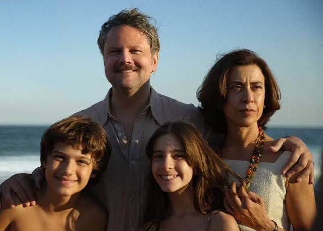
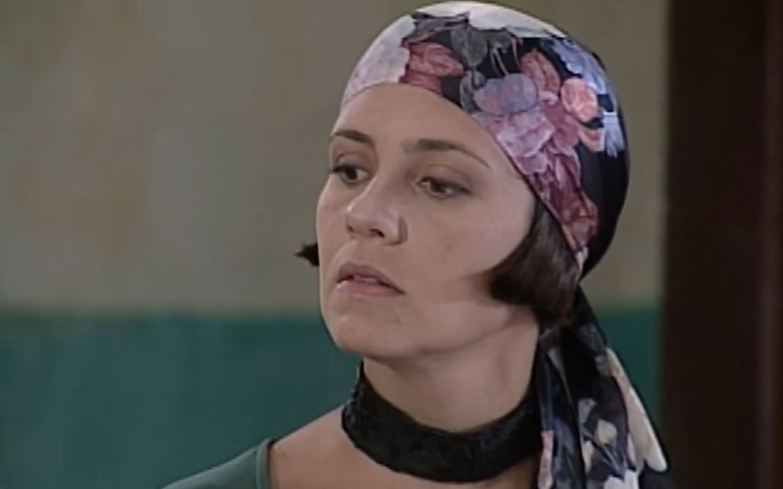

A atuação é uma das partes mais importantes de uma novela, série ou filme. Algumas atrizes conseguem interpretar personagens tão diferentes entre si que o público chega a esquecer que está assistindo à mesma pessoa. Mudanças de personalidade, sotaque, aparência e comportamento ajudam a criar personagens marcantes e inesquecíveis.
No Brasil, nomes como Fernanda Torres e Adriana Esteves são frequentemente lembrados por sua versatilidade. Ao longo de suas carreiras, ambas participaram de produções de gêneros muito diferentes, passando pela comédia, drama e até personagens consideradas vilãs icônicas da televisão brasileira.
Nesta página, apresentamos um breve panorama de algumas obras dessas atrizes e como cada papel demonstra diferentes aspectos de seu talento artístico.
Atrizes em destaque Fernanda Torres | Adriana Esteves
Saiba mais sobre Fernanda Torres
Saiba mais sobre Adriana Esteves
Fernanda Torres é uma atriz, escritora e roteirista brasileira reconhecida por sua versatilidade em produções de televisão, cinema e teatro. Ao longo de sua carreira, interpretou personagens cômicas, dramáticas e históricas, conquistando reconhecimento nacional e internacional.

Personagem: Fátima
A série acompanha duas amigas que trabalham em uma loja de vestidos de noiva no Rio de Janeiro. Fátima é uma mulher romântica, impulsiva e frequentemente envolvida em situações engraçadas ao lado de sua amiga Sueli.
O papel destacou o talento cômico de Fernanda Torres e tornou-se um dos personagens mais populares da televisão brasileira na década de 2010.

Personagem: Marina
A história acompanha moradores de uma pequena comunidade que tentam conseguir recursos para construir uma estação de tratamento de esgoto. Como não conseguem verba para a obra, decidem produzir um filme para obter financiamento.
Marina lidera a iniciativa e enfrenta diversos desafios durante a produção improvisada do filme, gerando situações divertidas e críticas sociais.

Personagem: Eunice Paiva
Baseado em fatos reais, o filme retrata a trajetória de Eunice Paiva após o desaparecimento de seu marido, o ex-deputado Rubens Paiva, durante a ditadura militar brasileira.
A personagem demonstra força, coragem e perseverança diante das dificuldades impostas pelo período histórico. O papel recebeu amplo reconhecimento da crítica e destacou a capacidade dramática da atriz.

Personagem: Áurea (fase adulta)
O filme acompanha diferentes gerações de mulheres vivendo em uma região isolada cercada por dunas de areia.
Fernanda Torres interpreta uma das personagens em sua fase adulta, participando de uma narrativa que explora temas como passagem do tempo, isolamento e relações familiares.
Adriana Esteves é uma das atrizes mais conhecidas da televisão brasileira. Sua carreira inclui personagens românticas, cômicas e algumas das vilãs mais marcantes da história das novelas.

Personagem: Catarina Batista
Inspirada na peça A Megera Domada, de William Shakespeare, a novela apresenta Catarina como uma mulher independente, determinada e conhecida por seu temperamento forte.
Ao longo da trama, sua relação com Petruchio transforma sua visão sobre o amor e a convivência com outras pessoas.

Personagem: Celinha
Celinha vive em um condomínio onde os moradores estão constantemente envolvidos em confusões e situações engraçadas.
A personagem é conhecida por seu jeito exagerado, suas expressões marcantes e pela participação em diversos momentos cômicos da série.
Personagem: Carminha
Carminha é considerada uma das vilãs mais famosas da televisão brasileira. Ambiciosa e manipuladora, ela utiliza mentiras e estratégias para alcançar seus objetivos.
A trama acompanha a busca de vingança de Rita (Nina) contra Carminha, criando um dos maiores sucessos da teledramaturgia brasileira.

Os papéis de Fátima, Marina, Eunice Paiva e Áurea mostram como Fernanda Torres consegue transitar entre comédia e drama, construindo personagens muito diferentes entre si e marcando sua presença em obras importantes do audiovisual brasileiro. Já os papéis de Catarina, Celinha e Carminha representam três estilos muito diferentes de personagem. Enquanto Catarina protagoniza uma história romântica, Celinha destaca o humor e Carminha se tornou um ícone das vilãs brasileiras. Essa variedade demonstra a capacidade dessas duas atrizes de se adaptar a diferentes gêneros e narrativas.